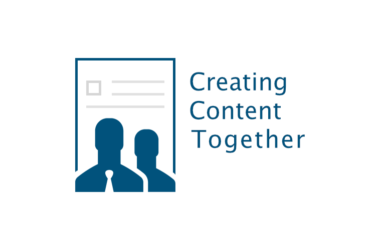

Creating Content Together - Collaborative CMS solutions

Earlier this year we started with the integration of the collaborative editor SMASHDOCs in Plone 5.
Our goal for 2017 is to provide integrations of SMASHDOCs for all major CMS implementations like Drupal, Joomla, Typo3, Wordpress and others.
The technical foundation of all CMS specific implementations are language specific wrappers of the SMASHDOCs webservice API.
At the moment we provide wrappers for the following languages:
- Python 2.7, Python 3.3+ (working, tested)
- Javascript/NodeJS (working, tested)
- PHP 7.X (working, tested)
- C# (work in progress)
All wrappers will be provided for free under the GNU Public License V2 (GPL2). All wrapper share basically the same common API which is fully documented for Python.
On top of the language specific SMASHDOCs wrappers we will provide CMS specific implementations like the one for Plone (screencast).
A prototype integration of SMASHDOCs with Drupal is currently in the making (screencast).
The name of this new project is Creating Content Together. Besides the SMASHDOCs integration we will optionally provide extended publishing capabilities based on our decade-long experience with project based on the Produce & Publish stack and our XML-Director CMS solution.
 www.creating-content-together.info
 www.content-gemeinsam-erstellen.de
www.content-gemeinsam-erstellen.de
Further informations about roadmap, functionality and pricing can be found on the websites above. Both sites will be relaunched within the next week. Also the English website will see a native translation (currently automatically translated using Google Translate).
Contact
Andreas Jung
info@zopyx.com